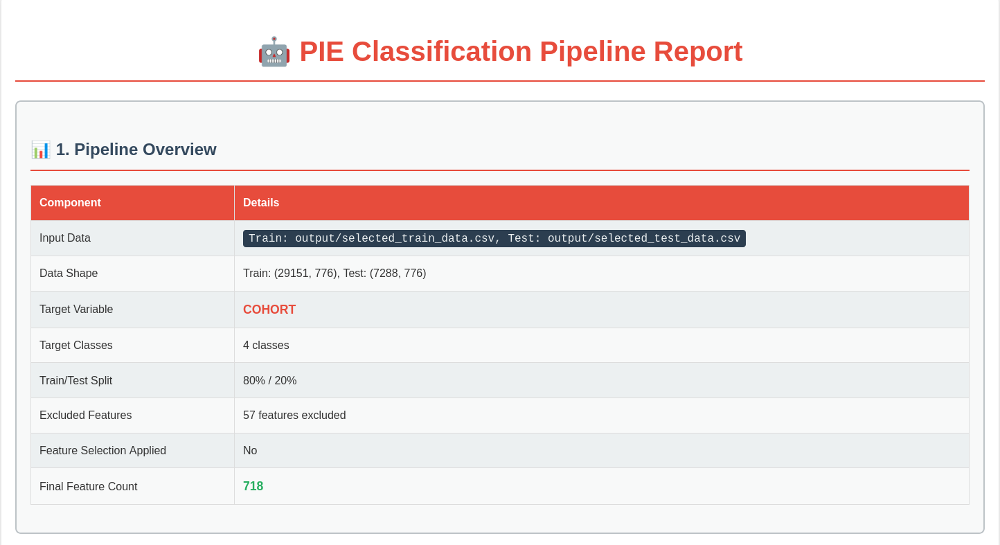
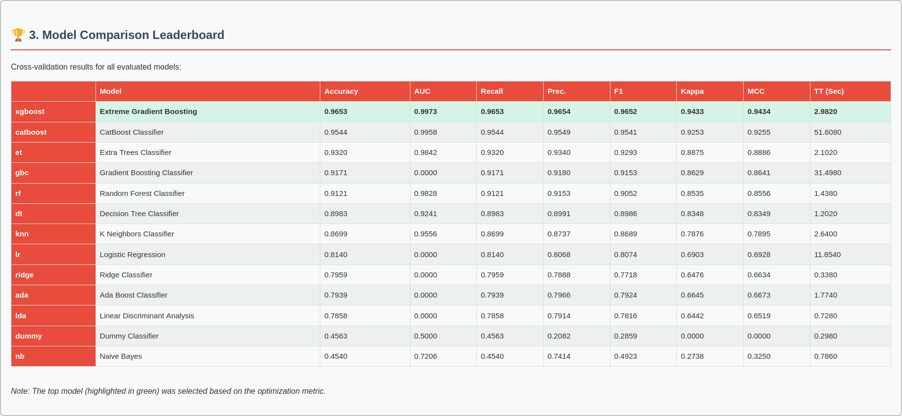
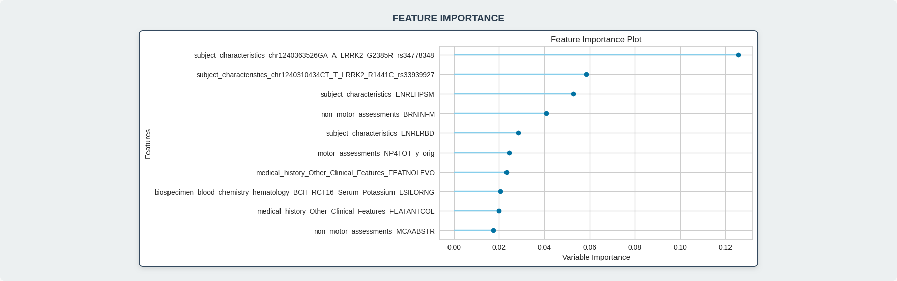
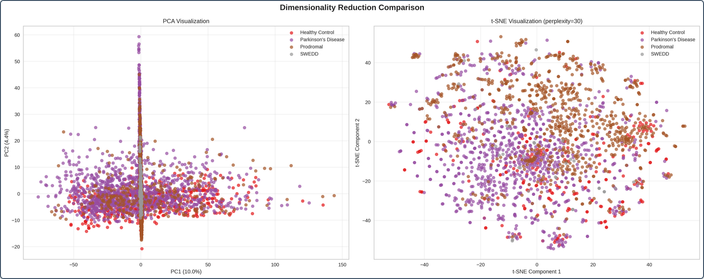
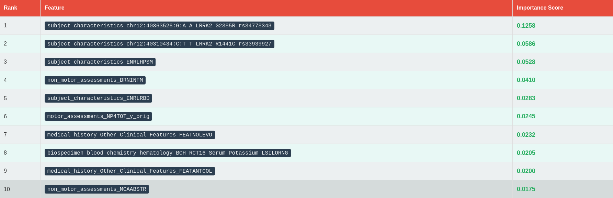
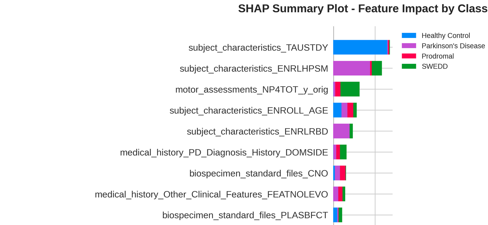

A Webinar for Parkinson's Researchers
Presented by
Cameron Hamilton & Victoria Catterson
PPMI contains 5+ modalities, thousands of features, complex longitudinal structures
Hours spent on data wrangling instead of research questions
Inconsistent preprocessing leads to non-comparable results
Months from raw data to actionable findings
Not every researcher is a machine learning or programming expert
"From Raw Data to Research Insights in a Single Command"
PIE restructures scattered PPMI data into a unified format where each row represents one patient at one visit, with all relevant data in a single row. This is fundamental for machine learning and data consistency.
Can we distinguish between Parkinson's Disease patients and healthy controls using multi-modal PPMI data?
Selected from 13 algorithms tested including CatBoost, Extra Trees, Random Forest, and others
| Stage | Processing Time | Traditional Approach |
|---|---|---|
| Data Loading | ~5 minutes | 1-2 weeks |
| Data Reduction | ~10 minutes | 2-3 weeks |
| Feature Engineering | ~15 minutes | 2-4 weeks |
| Feature Selection | ~5 minutes | 1-2 weeks |
| Model Training | ~30 minutes | 2-4 weeks |
| Total | ~65 minutes | 8-15 weeks |
Compare performance across multiple algorithms (XGBoost, CatBoost, Random Forest, etc.) with metrics like accuracy, AUC, recall, and precision
Understand which features drive predictions - genetic markers, clinical assessments, biomarkers ranked by importance
Feature impact by class - see how different features influence predictions for each cohort (PD, Control, Prodromal, SWEDD)
PCA and t-SNE visualizations showing natural clustering of patient cohorts in reduced dimensional space






With PIE, we're not just building a tool – we're building a research ecosystem that will:
Together, we can unlock the full potential of PPMI data and accelerate the path to better treatments for Parkinson's disease.
A: PIE is designed to be robust to PPMI data structure changes. The data loaders automatically detect column variations and handle missing files gracefully. We regularly update PIE to support new PPMI releases.
A: While PIE is optimized for PPMI data, the core architecture is modular and extensible. We're actively working on adaptations for Alzheimer's (ADNI), ALS, and other neurodegenerative disease datasets.
A: Current PIE is designed for research use. We're developing PIE Clinical with FDA/EMA compliance features, including audit trails, validation protocols, and clinical decision support interfaces.
A: Absolutely! PIE is open-source and welcomes contributions. See our GitHub repository for contribution guidelines and development documentation.
A: PIE is specifically designed for Parkinson's research and PPMI data. Unlike general AutoML tools, PIE understands the unique challenges of multi-modal longitudinal clinical data and includes domain-specific features like data leakage prevention for clinical variables.